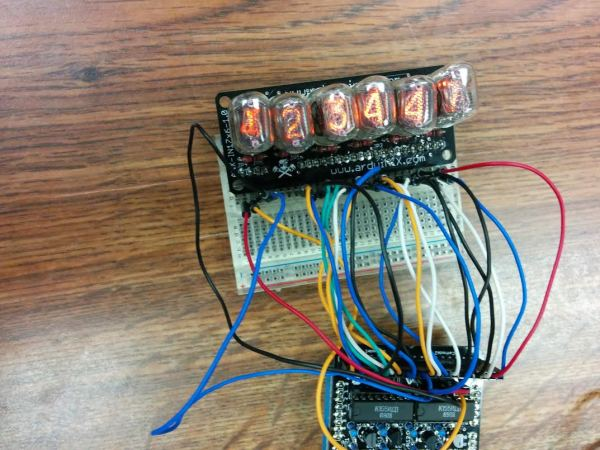

So approximately 2000 years ago I got a set of 6 nixie tubes as a gift. WTF is a nixie tube you ask? This is a nixie tube:
It’s an device for displaying all ten digits (0 through 9) using “glow discharge" (that thing that makes old incandescent lightbulb works), while looking really really cool.
The tubes I have are IN-17s and they operate at 180V. That is a lot of volts and it was pretty scary for me putting the circuit together since I’ve never worked with such high voltages. Fortunately, these works at relatively low amperages so I only have to worry about pain, not death.
Now, you might be wondering what I need to drive these things. The answer would be a
Russian K155NA1 Driver Chip, which is basically a high voltage Binary-Coded Decimal decoder and a circuit to step up wall wart DC voltage (9V at 1a) to 180V. Thankfully a nice person on the internet made an arduino shield to do all this called the ArduiNIX
Here’s my completed display:

I’m still trying to understand how the circuit works. There are 20 pins and 4 grounds, so I can apparently control a total of 80 digits. I’m only using 60 digits in this setup (10 digits per tube times 6 tubes), but I’m still pretty lost when reading the
demo code
My current understanding is that I have 2 BCDs which I can control with 8 pins (4 each, which makes sense since 2^4 = 16 > 10 digits), and I can control the 4 anode (aka ground) pins. From the code it seems I have to display 2 digits at a time, but I’m not at all clear how the digits are split up. That will be the subject for my next post!